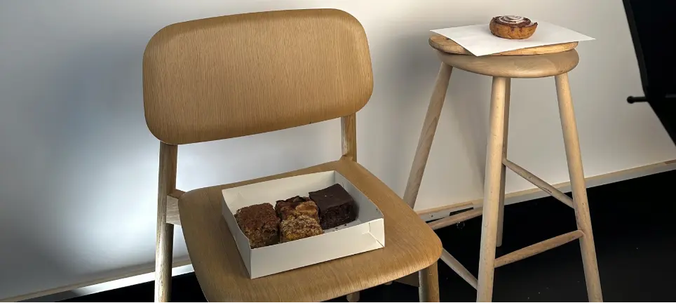

Forside

Multi medie design
Dette website er en del af mit eksamensprojekt og viser mit arbejde, mine kompetencer og min kreative proces inden for UI-udvikling. Her kombinerer jeg funktionelt design med en lyserød, feminin æstetik og fokus på brugervenlige løsninger.